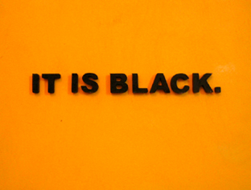

2006 May, Video Art
Question and Answers (Please turn on the volume)

There is no one rule in the world. Why people judge others only their one standard? All questions could have various answers in each different case. In my piece What color is it?, I attempt to convey the prejudice with one standard.
In the video, I ask "What color is it?" and interviewer answer. The panel that I hold says it is black with yellow background. I could be yellow or black. One third say black and the others say yellow. Some are confused, some are clear and some ask again what is question.
When I moved from Korea to the United States, I became a gauge that intensely felt my displacement and recognized not only the conformity and the standards inflicted upon me in America but also allowed me to deconstruct the rituals from my homeland that I had taken for granted as "normal."
We made a rule: this is yellow and this is black. This absolutely correct rule could be confused in case of my work. I would explore the theme to let us throw away the prejudice to others.